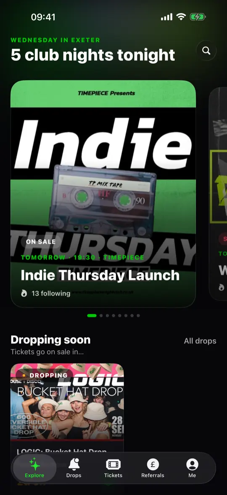

Exeter · apps, Mac tools, games, research
I'd rather build than consume.
Two sides, 12 tracks
Not just a record.
Every groove is something I shipped, tested or killed. Keep scrolling and it plays them in order.
Track 01 · on the App Store
Pinged the second Exeter tickets drop.
Sold out anyway? Buy a verified student's spare. Sellers pay no fees. About one to two seconds from release to your lock screen.
Play track 01
50trading ideas killed
out of sample, on the record ~170pre-registered hypotheses
SHA-256 sealed before results p ≈ 1.0deflated Sharpe of the best
of 3,038 trials. The honest answer. 2in small live tests
no profit claimed
out of sample, on the record ~170pre-registered hypotheses
SHA-256 sealed before results p ≈ 1.0deflated Sharpe of the best
of 3,038 trials. The honest answer. 2in small live tests
no profit claimed
Track 03 · Solana execution
Trigger to exit in a third of a millisecond.
Then I measured it, and speed bought 0.4 points. The loss was in the gap, not the latency. So I didn't rent the server.
Play track 03End of side A
I made a record spin for a homepage. Imagine what I'd build for you.
charlie@wuytack.net See all the workResearch and engineering, not financial advice. Nothing here is trading live at a profit.